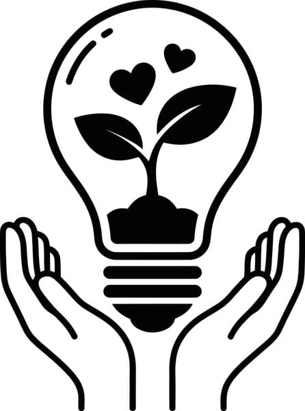

Las pilas y baterías son dispositivos esenciales en nuestra vida diaria, pero al finalizar su vida útil representan un grave riesgo para el medio ambiente y la salud humana si no se desechan adecuadamente. Cuando arrojamos las pilas a la basura convencional, estas terminan en tiraderos o rellenos sanitarios. Con el tiempo, su cubierta se rompe y liberan metales pesados tóxicos como mercurio, plomo, cadmio y litio. Estas sustancias se filtran al suelo y alcanzan los mantos acuíferos, contaminando el agua que bebemos y los cultivos que consumimos. al ser incineradas, liberan gases tóxicos que afectan la calidad del aire y la salud respiratoria de las personas. El impacto es duradero, ya que estos materiales tardan cientos de años en degradarse. Como organización, tenemos la responsabilidad de guiar y facilitar el cambio. Por ello, promovemos la cultura del desecho correcto a través de puntos de acopio estratégicos, alianzas con empresas recicladoras certificadas y campañas de sensibilización. Incentivamos a nuestros clientes y colaboradores a entregar sus pilas usadas para darles un tratamiento adecuado, evitando que lleguen al medio ambiente. Reciclar pilas no es solo una acción, es una muestra de respeto por el entorno y un legado de sostenibilidad para las futuras generaciones. ¡Tu pequeña acción hace una gran diferencia!
